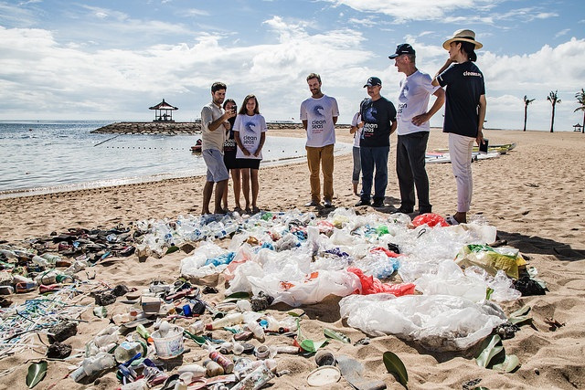
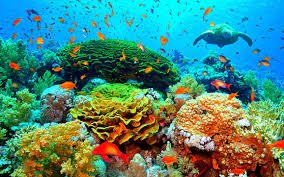

Sanear nuestras aguas! Las personas de todo el mundo comprometidas por un planeta mejor! Crear más indutrias verdes!
Miles de millones de personas principalmente en areas rurales, todavia arecen de servicios basicos.
Presentamos una propuesta de valor, "Una gota a la vez" cuidemos de nuestros mares, nuestro planeta, generemos innovación que genere mejores métodos de abastecimiento del líquido vital
Limpiemos nuestros mares, no contaminemos y ayudemos a sanear nuestro líquido vital
Limpiemos nuestro planeta, seamos el cambio. En grupos limpiemos las areas donde vivimos, que el paisaje sea de un mundo limpio, un mundo mejor.
El agua es un elemento vital, que nos sirve a todo ser vivo. Al sanear el agua la vida en el planeta perdurará.
